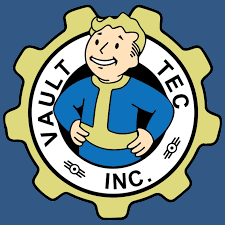

About Vault-Tec Corporation
Vault-Tec Corporation is a pioneering leader in civil defense, dedicated to ensuring the safety and survival of the American people in times of global crisis. With rising tensions between world powers, Vault-Tec has designed and built advanced underground Vaults, offering a secure refuge from the devastating effects of nuclear warfare. As experts in disaster preparedness, we combine cutting-edge technology and unparalleled expertise to create shelters that not only protect but also provide a foundation for a hopeful future. Vault-Tec’s commitment goes beyond just survival—our mission is to safeguard humanity and help communities thrive in the face of adversity.
Rest assured, Vault-Tec is dedicated to making your future as bright as possible. We are committed to ensuring that every Vault is a sanctuary of stability, innovation, and comfort. Join us in building a better tomorrow, today. Welcome to Vault-Tec, where your protection is our mission!
Our technologies
Our safe vaults!
Our Vaults are built to be self-sufficient, ensuring long-term survival for all residents. You and your family will enjoy a stable and harmonious life, surrounded by cutting-edge amenities, in a secure, community-oriented setting. Vault-Tec takes pride in providing you with peace of mind, knowing that your safety is our top priority.
Cryogenic pod
Our state-of-the-art cryogenic technology ensures that you and your loved ones can remain in perfect stasis, safeguarded from the chaos of the outside world. These Cryogenic Pods are designed to maintain the body’s condition while you sleep, allowing you to experience a peaceful, undisturbed rest for an extended period of time, preserving both your health and your future.

Power armor
Designed for both safety and superior performance, our Power Armor provides unmatched defense against radiation, hostile environments, and enemy threats. Built with the latest in military-grade technology, this heavily armored suit amplifies the user's strength and endurance, ensuring you can tackle any challenge with ease.